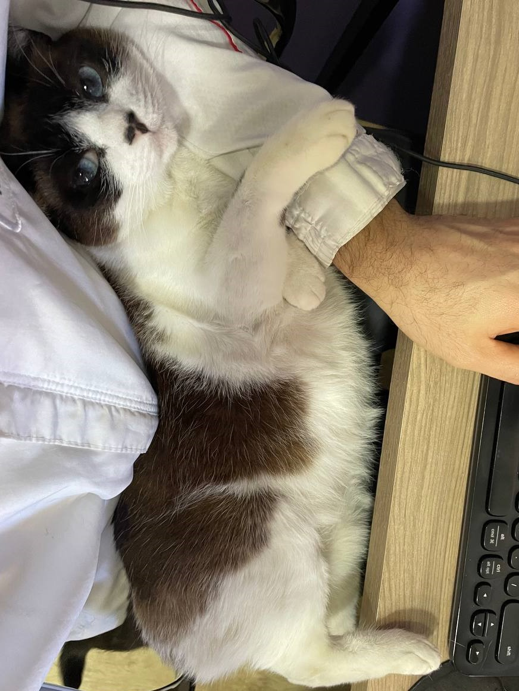
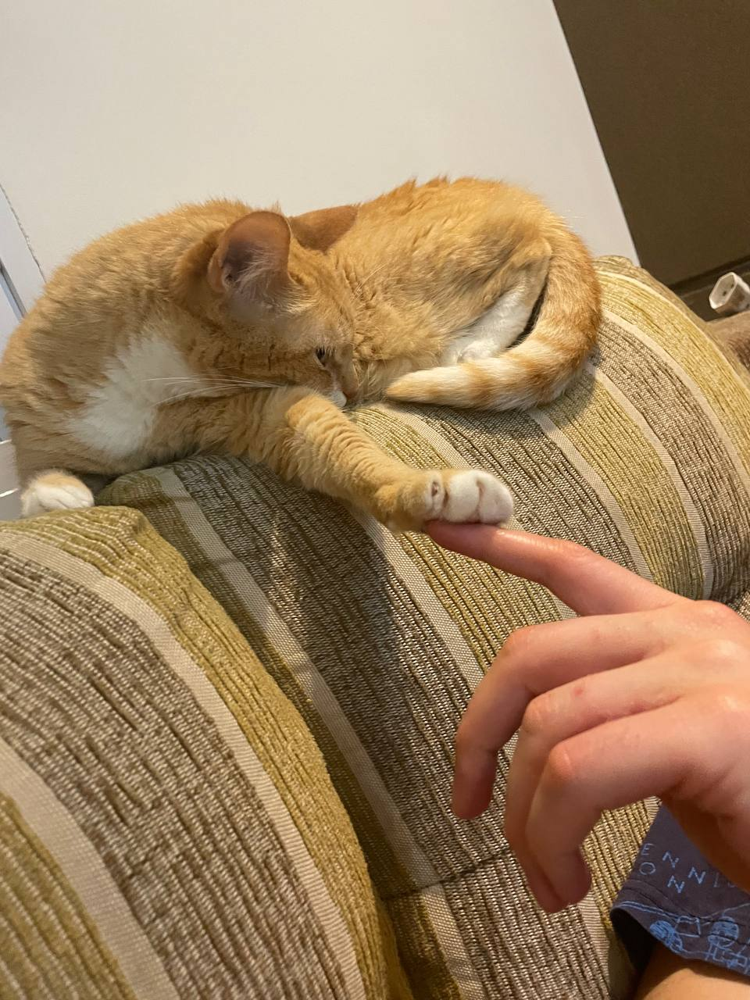
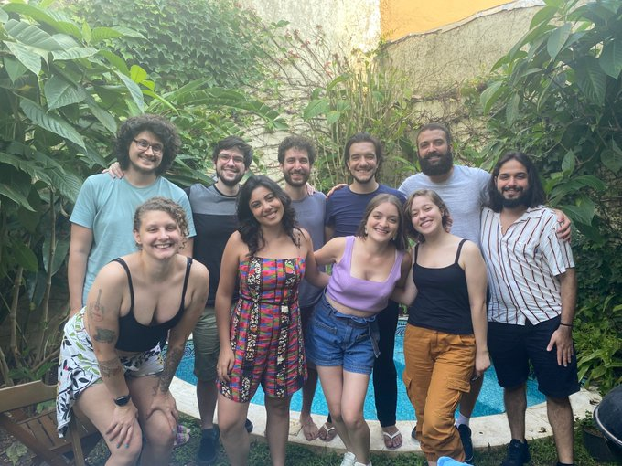

Meu nome é William Nilson de Amorim, tenho 36 anos e moro em São Paulo (SP) desde que nasci. Sou apaixonado por ciência, filosofia, histórias, futebol e jogos.
A Sophia e a Summer moram comigo.


Em 2012, me formei em Estatística no Instituto de Matemática e Estatística da Universidade de São Paulo (IME-USP). Em 2015 e 2019 terminei o Mestrado e o Doutorado, ambos em Estatística, ambos no IME-USP.
Há quase 10 anos venho trabalhando com programação em R e consultoria em análise de dados na R6, empresa que fundei com amigos do IME em 2018. Na maioria desses anos, também ministrei cursos básicos e avançados de R pela Curso-R, braço de educação da R6. A minha maior especialidade hoje é a construção de painéis de dados em Shiny.

Em 2025, realizei um sonho de profissional de trabalhar com análise de dados de futebol e passei a fazer parte da FlaDados, equipe de análise de dados do Clube de Regatas Flamengo.